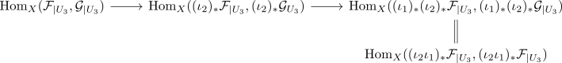
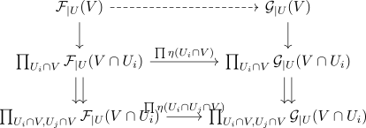
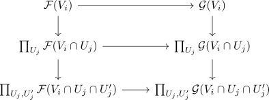
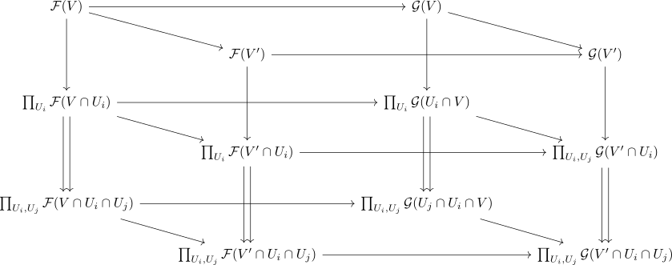
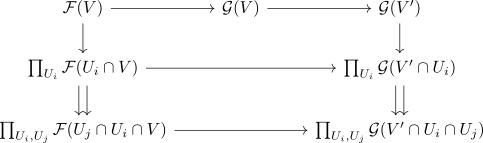

hom sheaf on a topological space
Definition / Proposition
Let $X$ be a topological space and $\mathcal{F}, \mathcal{G}$ sheaves on a topological space. Then the functor
is a sheaf, denoted by $\underline{\mathrm{Hom}}(\mathcal{F}, \mathcal{G})$ or $\mathcal{Hom}_{X}(\mathcal{F}, \mathcal{G})$.
Proof
Here $\mathcal{F}_{\vert U}$ is the restriction. First observe that $\mathrm{Hom}_{X}(\mathcal{F}, \mathcal{G})$ is a functor $\mathrm{Open}(X)^{\mathrm{op}} \rightarrow \mathrm{Set}$: We have for open inclusions $U_1 \xhookrightarrow{\iota_1} U_2 \xhookrightarrow{\iota_2} U_3$ that $(\iota_2 \iota_1)_* = (\iota_2)_* \circ (\iota_1)_*$ which implies that dont talk about direct image, might have messed up

Moreover, $(\mathrm{id}_{U})_* = \mathrm{id}_{\mathrm{Sh}(U)}$, so it remains to show that it is a sheaf.
Let $\eta_{U_i}: \mathcal{F}_{\vert U_i} \rightarrow \mathcal{G}_{\vert U_i}$ be a family of natural transformations such that $(\eta_{U_i})_{\vert U_j \cap U_i} = (\eta_{U_j})_{\vert U_i \cap U_j}$ for an open covering $U_i$ of $U = \bigcup U_i$. In particular, $\eta_{\vert U_i}(U_j \cap U_i) = \eta_{\vert U_j}(U_j \cap U_i)$ and by abuse of notation we write $\eta(V)$ for $V \subseteq U_i$ for some $i$.
Then we need to define a natural transformation $\eta: \mathcal{F}_{\vert U} \rightarrow \mathcal{G}_{\vert U}$. For any $V \subseteq U$, observe that $V \cap U_i$ is a covering of $V$ and the diagram in the bottom commutes, since $\eta$ is a natural transformation

therefore there exists - by the universal property of the equalizer - a unique morphism (this morphism is also e.g. \(R\)-linear if we have a $\mathrm{Mod}_R$ valued sheaves) $\mathcal{F}_{\vert U}(V) \rightarrow \mathcal{G}_{\vert U}(V)$ which makes the diagram commute: In particular, if there exists a natural transformation defined on $\mathcal{F}_{\vert U} \rightarrow \mathcal{G}_{\vert U}$, which restricts to $\eta_{U_i}$, then $\mathcal{F}_{\vert U}(V) \rightarrow \mathcal{G}_{\vert U}(V)$ must make the diagram above commute, i.e. must be the now defined $\eta(V)$. Therefore any glueing/lift - if it exists - must be unique.
todo:
- talk about, why this restricts: draw diagram for $V_i \subseteq U_i$

Here in this diagram, $\eta_{(U_i)}(V_i)$ is the unique morphism, which makes the diagram commute.
Thus $\eta$ restricts to $\eta_{U_i}$
Now we need to show that $\eta$ as defined is a natural transformation, so let $V' \subseteq V$, then we have a commutative diagram

We want to show that the top face commutes. For this it suffices to show that the bottom cube commutes: The map $\mathcal{F}(V) \rightarrow \mathcal{G}(V) \rightarrow \mathcal{G}(V')$ is the unique map which makes the following diagram commute

similarly for $\mathcal{F}(V) \rightarrow \mathcal{F}(V') \rightarrow \mathcal{G}(V')$
The outer sides commute since restrictions are compatible with each other and the front and bottom faces commute because $\eta$ is a natural transformation. Hence $\eta$ is a natural transformation.